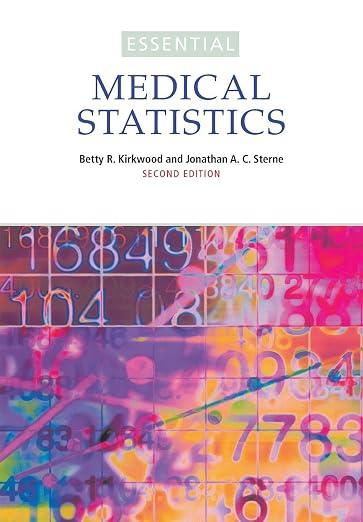
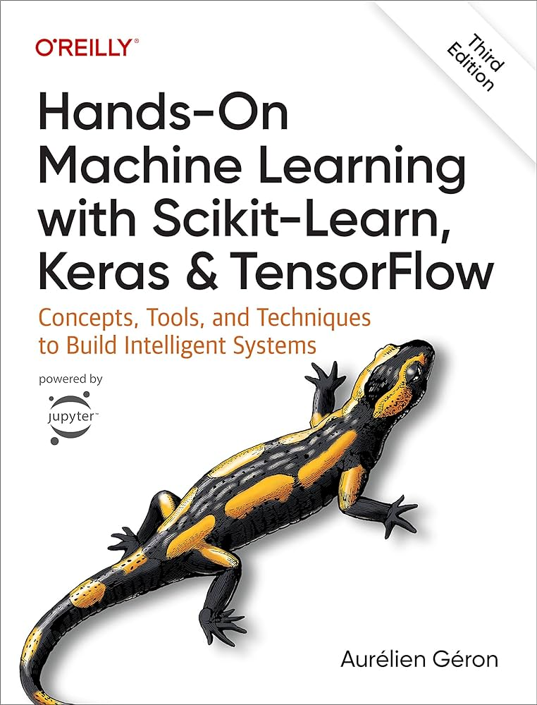
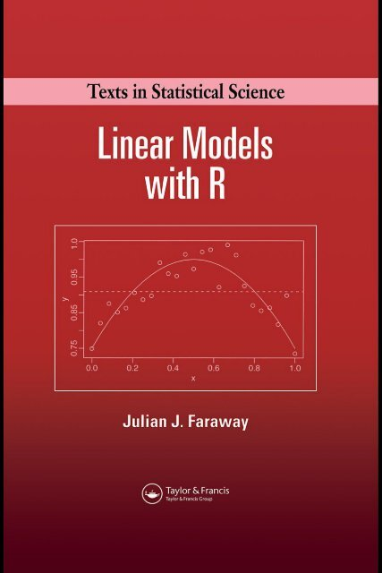
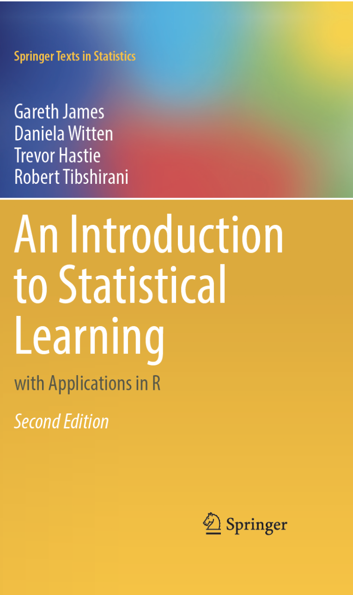

ca. 15 min
https://uppsala.instructure.com/courses/119661
https://nbisweden.github.io/workshop-mlbiostatistics/docs/SM4LS-book/




Consultation
Support https://nbis.se/services/bioinformatics
PhD Bioinformatics advisory program
One final sample from our model…
Each flower is generated by sampling from a garden model described by:
\(P \sim \operatorname{Poisson}(8)\), \(R \sim N(40, 7^2)\), \(H \sim N(160, 30^2)\), and \(C \sim U(0, 360)\)
garden = {
// ------------------------------------------------
// Seeded random-number generator
// This means previously sampled flowers don't
// change when a new one is added.
// ------------------------------------------------
function mulberry32(seed) {
return function() {
let t = seed += 0x6D2B79F5;
t = Math.imul(t ^ t >>> 15, t | 1);
t ^= t + Math.imul(t ^ t >>> 7, t | 61);
return ((t ^ t >>> 14) >>> 0) / 4294967296;
}
}
// Normal distribution
function rnorm(rand, mean, sd) {
let u = 0;
let v = 0;
while (u === 0) u = rand();
while (v === 0) v = rand();
let z =
Math.sqrt(-2 * Math.log(u)) *
Math.cos(2 * Math.PI * v);
return mean + sd * z;
}
// Poisson distribution
function rpois(rand, lambda) {
let L = Math.exp(-lambda);
let k = 0;
let p = 1;
do {
k++;
p *= rand();
} while (p > L);
return k - 1;
}
const NS = "http://www.w3.org/2000/svg";
// ------------------------------------------------
// Container
// ------------------------------------------------
const container = document.createElement("div");
container.style.textAlign = "center";
// ------------------------------------------------
// Information text
// ------------------------------------------------
const info = document.createElement("div");
info.style.fontSize = "0.65em";
info.style.marginBottom = "5px";
info.style.minHeight = "1.5em";
container.appendChild(info);
// ------------------------------------------------
// SVG garden
// ------------------------------------------------
const svg = document.createElementNS(NS, "svg");
svg.setAttribute("viewBox", "0 0 900 370");
svg.style.width = "100%";
svg.style.maxWidth = "900px";
svg.style.height = "370px";
// ground
const groundLine =
document.createElementNS(NS, "line");
groundLine.setAttribute("x1", 20);
groundLine.setAttribute("y1", 330);
groundLine.setAttribute("x2", 880);
groundLine.setAttribute("y2", 330);
groundLine.setAttribute("stroke", "#888");
groundLine.setAttribute("stroke-width", 2);
svg.appendChild(groundLine);
// ------------------------------------------------
// Draw all samples so far
// ------------------------------------------------
for (let i = 0; i < sample; i++) {
const rand =
mulberry32(91827 + i * 12547);
// ------------------------------
// SAMPLE FROM OUR MODEL
// ------------------------------
// petals ~ Poisson(8)
let petals = rpois(rand, 8);
// just protect the drawing from zero petals
petals = Math.max(1, petals);
// flower size ~ N(40, 7²)
const sampledRadius =
rnorm(rand, 40, 7);
// stem height ~ N(160, 30²)
const sampledStem =
rnorm(rand, 160, 30);
// colour ~ Uniform(0, 360)
const hue =
rand() * 360;
// horizontal location ~ Uniform
//
// Use evenly spaced regions so flowers
// don't all land on top of one another.
const slots = 12;
const slot =
i % slots;
const row =
Math.floor(i / slots);
const x =
55 +
slot * (790 / (slots - 1)) +
(rand() - 0.5) * 25;
// keep extreme samples drawable
const radius =
Math.max(18,
Math.min(62, sampledRadius));
const stemHeight =
Math.max(70,
Math.min(230, sampledStem));
const ground =
330 + row * 3;
const y =
ground - stemHeight;
// ------------------------------
// STEM
// ------------------------------
const stem =
document.createElementNS(NS, "line");
stem.setAttribute("x1", x);
stem.setAttribute("y1", y);
stem.setAttribute("x2", x);
stem.setAttribute("y2", ground);
stem.setAttribute(
"stroke",
"#4f8a4c"
);
stem.setAttribute(
"stroke-width",
6
);
stem.setAttribute(
"stroke-linecap",
"round"
);
svg.appendChild(stem);
// ------------------------------
// LEAF
// ------------------------------
const leaf =
document.createElementNS(
NS,
"ellipse"
);
const leafY =
y + stemHeight * 0.58;
leaf.setAttribute(
"cx",
x + 15
);
leaf.setAttribute(
"cy",
leafY
);
leaf.setAttribute("rx", 20);
leaf.setAttribute("ry", 7);
leaf.setAttribute(
"fill",
"#6fa95d"
);
leaf.setAttribute(
"transform",
`rotate(-25 ${x + 15} ${leafY})`
);
svg.appendChild(leaf);
// ------------------------------
// PETALS
// ------------------------------
for (
let p = 0;
p < petals;
p++
) {
const angle =
2 * Math.PI *
p / petals;
const distance =
radius * 0.55;
const px =
x +
Math.cos(angle) *
distance;
const py =
y +
Math.sin(angle) *
distance;
const petal =
document.createElementNS(
NS,
"ellipse"
);
petal.setAttribute(
"cx",
px
);
petal.setAttribute(
"cy",
py
);
petal.setAttribute(
"rx",
radius * 0.48
);
petal.setAttribute(
"ry",
radius * 0.25
);
petal.setAttribute(
"fill",
`hsl(${hue}, 70%, 70%)`
);
petal.setAttribute(
"transform",
`rotate(
${angle * 180 / Math.PI}
${px}
${py}
)`
);
svg.appendChild(petal);
}
// ------------------------------
// CENTRE
// ------------------------------
const centre =
document.createElementNS(
NS,
"circle"
);
centre.setAttribute(
"cx",
x
);
centre.setAttribute(
"cy",
y
);
centre.setAttribute(
"r",
radius * 0.30
);
centre.setAttribute(
"fill",
"#f5c542"
);
svg.appendChild(centre);
// show latest sample
if (i === sample - 1) {
info.innerHTML =
`Sample ${sample}: ` +
`<b>${petals} petals</b>` +
` · flower size = ` +
`${sampledRadius.toFixed(1)}` +
` · stem height = ` +
`${sampledStem.toFixed(1)}`;
}
}
// before first click
if (sample === 0) {
info.innerHTML =
"Click to draw from the model.";
}
container.appendChild(svg);
return container;
}Statistical Methods for Life Sciences